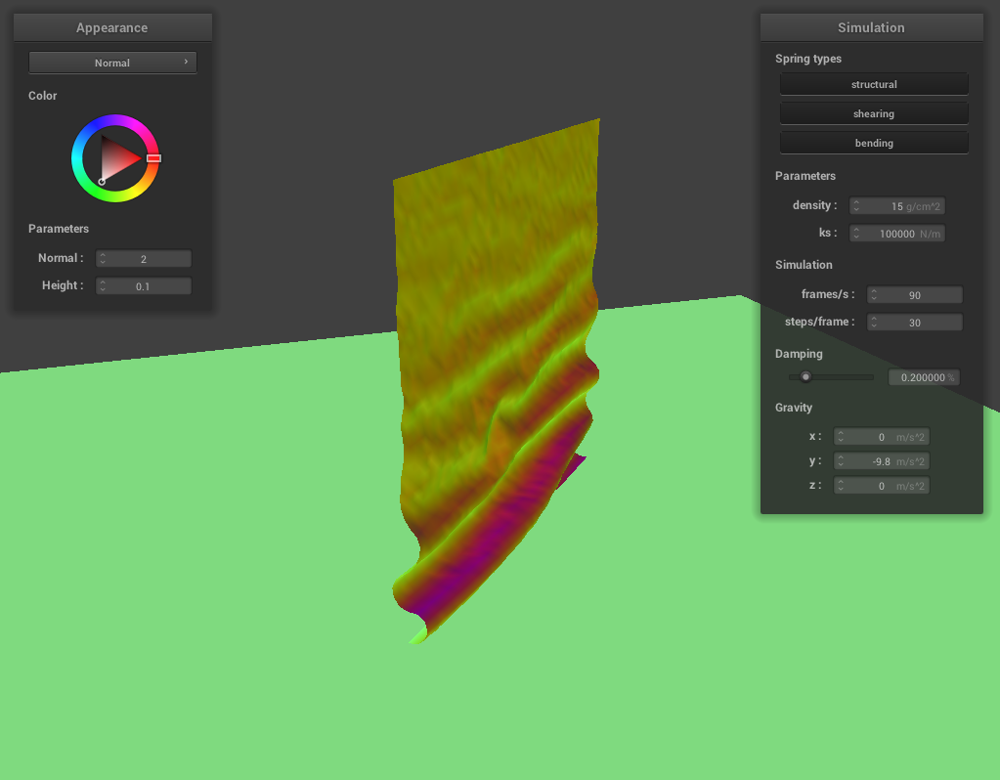
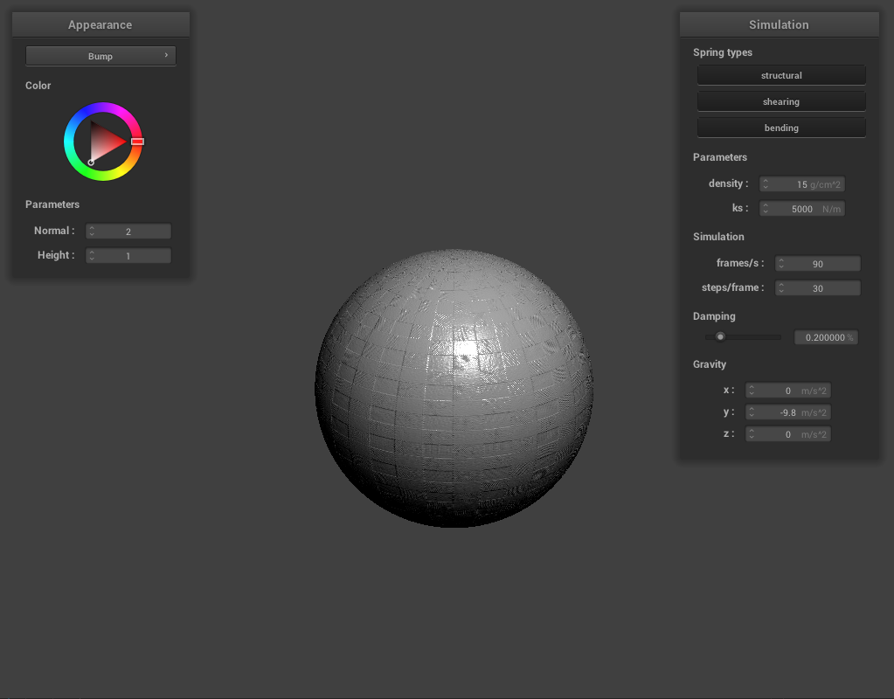

In this project, I implemented cloth simulation in computer graphics along with several simple GLSL shader programs. To simulate cloth on a computer, I treated the cloth as a large mass-spring system where a sheet of point masses were connected to eachother via a spring system that was designed to simulate structural, shearing, and bending constraints. Then, I used the spring system to simulate position updates for each of the cloth point mass positions. To do this, I used a numerical integration estimator to determine the new positions of each point mass based on the spring and external forces acting on them. Then, I constrained the positions of the point masses to account for loss of energy as well stability. Finally, I implemented both object and self-collisions for the cloth. For the GLSL shader programs, I implemented a number of shading techniques including diffuse shading, Blinn-Phong shading, texture mapping, bump and displacement mapping, and environment mapping. This project was very cool to see in action because I could see the cloth's simulated movements in real time with shaders applied to them. It felt almost like a video game.
To build a system of point masses and springs, I first populated the point_mass vector field of the Cloth object. I iterated through num_width_points by num_height_points point masses and created positions for each of them and pinning them if necessary. After the point masses were created, I proceeded to create the springs. I once again iterated through the num_width_points by num_height_points point masses and created structural, shearing, and bending springs depending on the pointmass position.
Here are some screenshots of scene/pinned2.json:
Here are some screenshots of scene/pinned2.json with only certain constrains:
To actually implement the simulation of the cloth movement, I used verlet integration as the estimator for the cloth point mass position updates. For each of the point_masses, if they were not pinned, I would accumulate any external forces acting on the point_mass. Then, I would iterate through each spring and accumulate the forces acting on each point_mass by the springs attached to them. When this was completed, I calculated position updates for each point mass (if they were not pinned) using the verlet integration formula. When the position updates were calculated, all collisions were then resolved (which will be discussed in later parts). Finally, the point mass positions were constrained such that the distance between each point mass per spring were never more than ten percent of that springs resting length. If neither point mass were pinned, then the correction was applied to each of the point masses evenly. If one of the point masses of that spring system were pinned, then the entire correction was applied to the other point mass.
Here is a screenshot of scene/pinned2.json with default parameters:


Here are some screenshots of scene/pinned2.json as the cloth is animated with different density values:


Here are some screenshots of scene/pinned2.json as the cloth is animated with different damping values:


Here is a screenshot of scene/pinned4.json in its final resting state:

To handle collisions with other objects, I only implemented collisions with a sphere and a plane. To handle cloth intersection with a sphere, I first calculated to see if a pointmass was within the spheres radius. If the point mass was, I set the point mass's position to be slightly outside of the sphere. The position on the sphere I used for the outside intersection point was the point of intersection between the sphere surface and the line that goes from the point mass's position and the sphere's center. For detecting collisions with a plane, I drew a vector from the plane's point to the point mass. I then took the dot product of this vector with the planes normal. If the dot product was negative, I knew the point mass had crossed the plane. If the point mass had crossed the plane, I simply projected the point mass's position onto the plane and I set the point mass's position to be slightly above that projection point on the side the pointmass used to be.
Here are some screenshots of the cloth from scene/sphere.json in its final resting state on the sphere using different spring constants ks:

Here is a screenshot of the cloth laying on the plane with the texture shader:
Handling cloth self collision was a multistep process. First, I came up with a hash function that could take a point mass's position and hash it to a value specific to a 3d bounding box in the scene. To do so, I determined which bounding volume segment the position belonged in the x, y, and z axis. Then using these three truncated values, I took the truncated x position, multiplied it by 101, squared it, added it to the truncated y value times 101, and then added it to the truncated z value. Using this hash function, I could build a spatial map of all the point masses. With the spatial map built, I could calulate self collisions for each point mass. First, I determined if there were other point masses within that spatial hash using the spatial map. If there were, I took all the other points that were too close to the given point and summed the displacement correction to the given point. Each displacement correction to the given point by the other point is the displacement needed to move the current point outside of a acceptable delta neighborhood around the other point. Using the summed displacement correction, I averaged the correction by the number of points used to create this displacement correction and then I averaged it again by simulation_steps. This prevent points on the cloth to collapse within another and fold into itself.
Here are some screenshots of the cloth as it falls and folds on itself:
Here are some screenshots of the cloth as it falls and folds on itself with a ks of 10 N/m:
Here are some screenshots of the cloth as it falls and folds on itself with a ks of 100,000 N/m:

When building computer graphical models, shaders are used to determine the special lighting, shadow, and color effects of a scene. This is almost like what brings a computer generated image "to life". A shader program does this computation, often using GPU's for high parallelism. In this project, I implemented various vertex and fragment shaders. Vertex shaders take the vertices of a model and creates the data that the fragment shader then uses to apply things like color and lighting and shadows. Vertex shaders also map these values to the rasterization buffer. Fragment shaders take data such as vertex positions, normals, and uv coordinates generated by the vertex shader and then maps this geometric data to light and colors.
The Blinn-Phong shading model has three essential components used to shade a scene. It has an ambient light portion, a diffuse lighting portion, and a specular light portion. Here are screenshots of my Blinn-Phong shader outputting only each component:
Ambient Light Only:
Diffuse Lighting Only:

Specular Lighting Only:
All lighting:
Here is a screenshot of my texture mapping shader using my own custom texture. The image is a picture of a Krispy Kreme sign that I took.


Here are some screenshots of bump mapping on the cloth and on the sphere:
Here is a screenshot of displacement mapping on the cloth and on the sphere:
When using bump mapping, the shape of the sphere and the cloth retains itself while it has the look of a texture on it. However, if you look at the edges of displacement mapping for both the sphere and the cloth draped over the sphere, you can notice that they are actually a little deformed. This means that displacement mapping actually displaced the vertices of the sphere and the cloth in the render while also creating the optical illusion of textured lighting.
Here are some screenshots of bump mapping on the cloth and on the sphere at coarseness 16:
Here are some screenshots of displacement mapping on the cloth and on the sphere at coarseness 16:
Here are some screenshots of bump mapping on the cloth and on the sphere at coarseness 128:

Here are some screenshots of displacement mapping on the cloth and on the sphere at coarseness 128:
Looking at the two shaders across the two difference spherical resolutions, higher resolutions work better on bump mapping while lower resolutions work fine on displacement mapping. At lower resolution, bump mapping shows more unsmoothess of the sphere by itself and with a cloth draped over it. At a higher resolution however, you can tell the sphere is quite smooth in every shading method with or without a cloth draped. This means that displacement mapping can help buff out some unsmoothness from models at lower resolution that are meant to be smooth by introducting a little geometric noise to the surface.
Here is a screenshot of my mirror shader working on the sphere and on the cloth draped over the sphere: